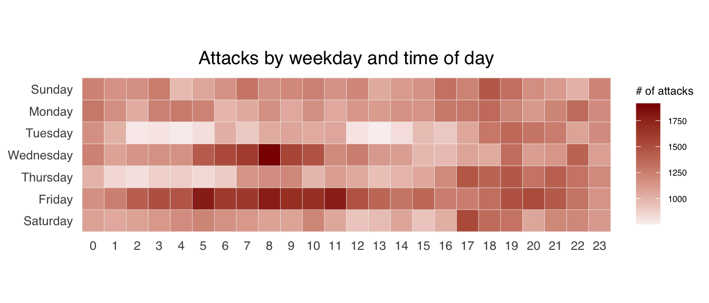

pacman::p_load(scales, viridis, lubridate, ggthemes, gridExtra, readxl, knitr,
data.table, tidyverse, CGPfunctions, ggHoriPlot)Hands-on_Ex01
Visualising and Analysing Time-oriented Data
1 Learning Objectives
In this chapter, we will learn to plot the following visualisations:
- a calender heatmap (ggplot2 functions)
- a cycle plot (ggplot2 functions)
- a slopegraph
- a horizon chart
2 Getting Started
To install and launch the following R packages:
scales, viridis, lubridate, ggthemes, gridExtra, readxl, knitr, data.table and tidyverse.
3 Plotting Calendar Heatmap
Within this section, we will do the following:
- plot a calendar heatmap by using ggplot2 functions and extension
- write function using R programming
- derive specific date and time related field by using base R and libridate packages
- perform data preparation task by using tidyr and dplyr packages
3.1 Data
eventlog.csv file will be used for this exercise. This data file consists of 199,999 rows of time-series cyber attack records by country.
To import eventlog.csv into R environment and call this data frame as attacks.
attacks <- read_csv("data/eventlog.csv")We will use kable() to review the structure of the imported data frame.
kable(head(attacks))| timestamp | source_country | tz |
|---|---|---|
| 2015-03-12 15:59:16 | CN | Asia/Shanghai |
| 2015-03-12 16:00:48 | FR | Europe/Paris |
| 2015-03-12 16:02:26 | CN | Asia/Shanghai |
| 2015-03-12 16:02:38 | US | America/Chicago |
| 2015-03-12 16:03:22 | CN | Asia/Shanghai |
| 2015-03-12 16:03:45 | CN | Asia/Shanghai |
We see 3 columns: timestamp, source_country, and tz.
- timestamp: stores data-time values in POSIXct format.
- source_country: stores the source of attack. It is in ISO3166-1 alpha-2 country code.
- tz: stores timezone of source IP address.
Step 1. Deriving weekday and hour of day fields
Two new fields need to be derived: wkday and hour before we plot the calendar heatmap.
Show the code
make_hr_wkday <- function(ts, sc, tz) {
real_times <- ymd_hms(ts,
tz = tz[1],
quiet = TRUE)
dt <- data.table(source_country = sc,
wkday = weekdays(real_times),
hour = hour(real_times))
return(dt)
}Learning from the code
weekdays()is a base R function.
Step 2. Deriving the attacks tibble data frame
Show the code
wkday_levels <- c('Saturday', 'Friday', 'Thursday',
'Wednesday', 'Tuesday', 'Monday',
'Sunday')
attacks <- attacks %>%
group_by(tz) %>%
do(make_hr_wkday(.$timestamp,
.$source_country,
.$tz)) %>%
ungroup() %>%
mutate(wkday = factor(
wkday, levels = wkday_levels),
hour = factor(
hour, levels = 0:23
)
)Learning from the code
mutate() of dplyr package is used to convert wkday and hour fields into factor so they will be ordered when plotting.
Step 3. Check the tibble table:
kable(head(attacks))| tz | source_country | wkday | hour |
|---|---|---|---|
| Africa/Cairo | BG | Saturday | 20 |
| Africa/Cairo | TW | Sunday | 6 |
| Africa/Cairo | TW | Sunday | 8 |
| Africa/Cairo | CN | Sunday | 11 |
| Africa/Cairo | US | Sunday | 15 |
| Africa/Cairo | CA | Monday | 11 |
3.2 Build the calendar heatmaps
We can simply group the count by hour and wkday and plot it, since we know that we have values for every combination. Use the code below to build the calendar heatmaps:
Show the code
grouped <- attacks %>%
count(wkday, hour) %>%
ungroup() %>%
na.omit()
ggplot(grouped,
aes(hour,
wkday,
fill = n)) +
geom_tile(color = "#f1f4f5",
size = 0.1) +
theme_tufte(base_family = "Helvetica") +
coord_equal() +
scale_fill_gradient(name = "# of attacks",
low = "#faf1f0",
high = "dark red") +
labs(x = NULL,
y = NULL,
title = "Attacks by weekday and time of day") +
theme(axis.ticks = element_blank(),
plot.title = element_text(hjust = 0.5),
legend.title = element_text(size = 8),
legend.text = element_text(size = 6))
Learning from the code
- a tibble data table called grouped is derived by aggregating the attack by wkday and hour fields.
- a new field called n is derived by using group_by() and count() functions.
na.omit()is used to exclude missing value.geom_tile()is used to plot tiles (grids) at each x and y position.colorandsizearguments are used to specify the border color and line size of the tiles.theme_tufte()of ggthemes package is used to remove unnecessary chart junk. [there is a dashed line around the plot removed by this theme]coord_equal()is used to ensure the plot will have an aspect ratio of 1:1.scale_fill_gradient()function is used to create a two colour gradient (low-high).
3.3 Build multiple calendar heatmaps
Challenge: Build multiple heatmaps for the top four countries with the highest number of attacks.
Step 1. Derive attack numbers by country object
To identify the top 4 countries with the highest attack numbers, we need to do the following:
- count the number of attacks by country
- calculate the percentage of attacks by country
- save the result in a tibble data frame
Show the code
attacks_by_country <- count(
attacks, source_country) %>%
mutate(percent = percent(n/sum(n))) %>%
arrange(desc(n))Step 2. Prepare the tidy data frame
Now, we will extract the top 4 countries from attacks data frame, and save the data in a new tibble data frame top4_attacks.
Show the code
top4 <- attacks_by_country$source_country[1:4]
top4_attacks <- attacks %>%
filter(source_country %in% top4) %>%
count(source_country, wkday, hour) %>%
ungroup() %>%
mutate(source_country = factor(
source_country, levels = top4
)) %>%
na.omit()Step 3. Plot the multiple calendar heatmap with ggplot2
Show the code
ggplot(top4_attacks,
aes(hour,
wkday,
fill = n)) +
geom_tile(color = "#f1f4f5", size = 0.1) +
theme_tufte(base_family = "Helvetica") +
coord_equal() +
scale_fill_gradient(name = "# of attacks",
low = "#faf1f0",
high = "dark red") +
facet_wrap(~source_country, ncol = 2) +
labs(x = NULL, y = NULL,
title = "Attacks on top 4 countries by weekday and time of day") +
theme(axis.ticks = element_blank(),
axis.text.x = element_text(size = 4),
axis.text.y = element_text(size = 4),
plot.title = element_text(size = 10, hjust = 0.5),
legend.title = element_text(size = 8),
legend.text = element_text(size = 6))